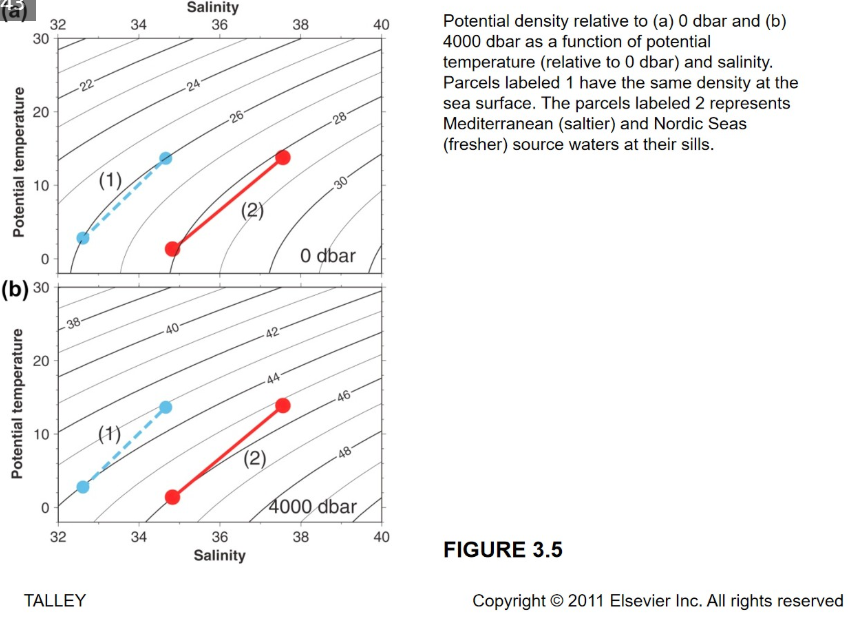
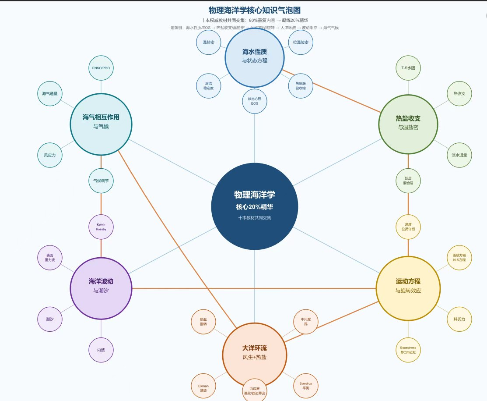
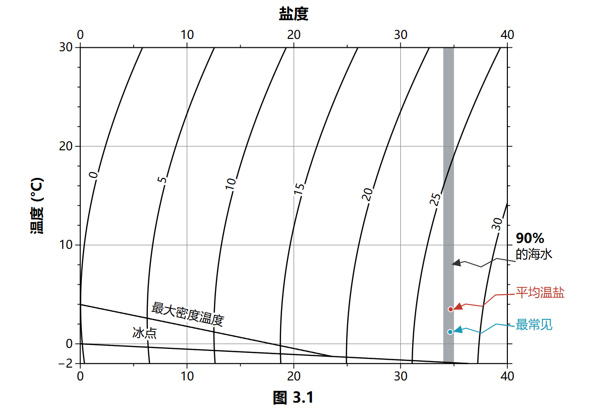
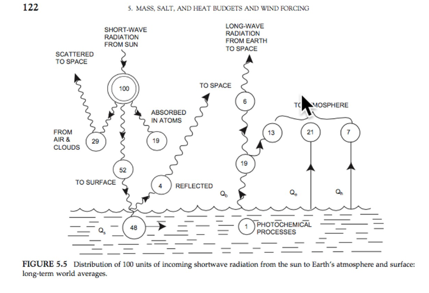
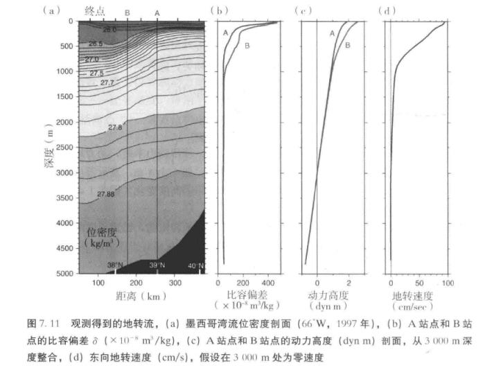
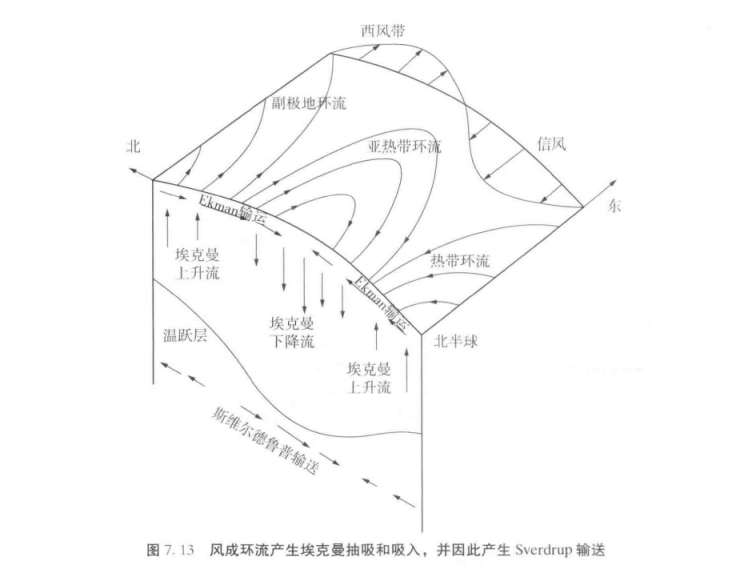

摘录 1 · 教材 第 44 页 · 图 3.5

我的解释
位密不能只看温度或只看盐度：同一张 T-S 图上，参考压力取 0 dbar 还是 4000 dbar，等密线的位置会变。图里 1 号水团和表层水同密度；2 号分别是地中海（更咸）和北欧海（更淡）的源水——盐度差很多，位密却可以接近。 （对应第 2 周，可再补充）
这门课共八周（Week 1–8），每周一个课次。每一次课的课堂笔记都记在这里：当周学了什么、 当时哪里没听懂、后来怎么想通的。每次课的出门票统一放在页面最末尾的「出门票 · 八周记录」里。 点开周次即可展开，已写好的三周默认打开。

对应教材：本周是方法论，暂不涉及具体章节
问题来自老师课程 PPT 的九个问题，答案整理见 九题分享。


对应教材：第 3 章 · 图 3.1 / 第 5 章 · 图 5.5
相关内容：EOF 主成分分析 · EOF 是怎么算出来的（18 秒）
对应教材：第 6 章 · 数据分析方法
相关内容：从海水密度到地转流速（含互动小测）

对应教材：第 7 章 · 图 7.11

当时没懂Sverdrup Balance 到底在说什么？为什么风能让整个海盆的水往一个方向输运？
后来想通关键在位涡守恒：由于位涡守恒，海水柱被拉伸，就往极地方向移动；海水柱被压扁，就往赤道方向移动。把这一条约束和风应力造成的表层辐聚 / 辐散接上，才推得出内部一致的那支斯维尔德鲁普输送——它不是「风把水吹过去」，而是水柱为了守住位涡被迫南北移动。
对应教材：第 7 章 · 图 7.13
对应教材：《书名待补充》第 __ 章 第 __ 节
对应教材：《书名待补充》第 __ 章 第 __ 节
对应教材：《书名待补充》第 __ 章 第 __ 节
这里把课堂内容落回教材：《物理海洋学》（第六版，Talley 等著，张恒 译，中山大学出版社）。 每一周对应第几章第几节第几页、书里原文讲了什么、我自己的解释， 以及教材和老师课堂讲法的差异与补充。教材的知识点在这里按章复习，配合知识图谱一起看。
每一周的课，对应教材的哪一章、哪一节、哪几页。
| 课次 | 课堂主题 | 教材章节 | 页码 |
|---|---|---|---|
| 第 1 周 | 待补充 | 第 __ 章 第 __ 节 | P.__–__ |
| 第 2 周 | 九题分享（混合层与热收支） | 第 3 章 · 图 3.1 / 第 5 章 · 图 5.5 | P.44 |
| 第 3 周 | EOF 主成分分析 | 第 6 章 · 数据分析方法 | P.__ |
| 第 4 周 | 从海水密度到地转流速 | 第 7 章 · 图 7.11 | P.__ |
| 第 5 周 | Sverdrup 平衡、涡度守恒 | 第 7 章 · 图 7.13 | P.__ |
| 第 6 周 | 待补充 | 第 __ 章 第 __ 节 | P.__–__ |
| 第 7 周 | 待补充 | 第 __ 章 第 __ 节 | P.__–__ |
| 第 8 周 | 待补充 | 第 __ 章 第 __ 节 | P.__–__ |
每一处写清楚：第几章第几节第几页、原文是什么（公式 / 图 / 数据）、我自己的解释是什么。

教材之外自己查的资料、文献或数据，写清楚它和教材这一节的关系。
教材 PDF 体积较大（226.7 MB），整本放进仓库会拖慢站点，也涉及版权，所以放在外部网盘，需要时自行下载。
提示：夸克网盘对大文件可能要求登录后再下载。如果点开无法直接下载，先在页面里「保存到网盘」，再从网盘里下载即可。
每次课结束前老师留的问题。这里记下我当时的回答，以及后来在哪一周想通了、补充了什么——前后能对上，才看得出思路是一课一课往前走的。
呼应：第 3 周（把「讲清楚一个概念」用到 EOF 动画上）
呼应：—
呼应：—
呼应：第 5 周（埃克曼深度 → 埃克曼抽吸）
呼应：—
呼应：第 __ 周
呼应：第 __ 周
呼应：第 __ 周
八周课程 · 8 次出门票 · 课堂笔记与教材对照 · 最近更新 2026-10-15